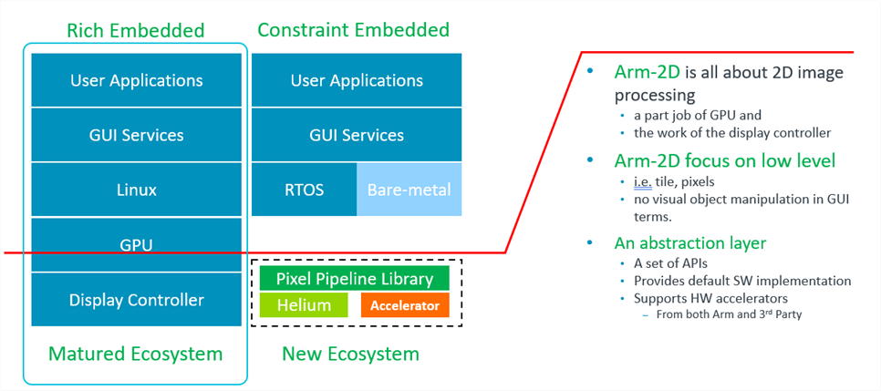
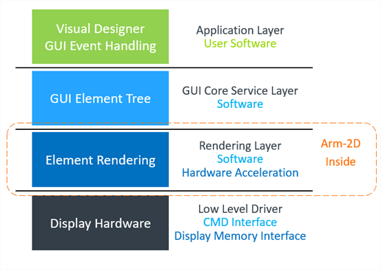
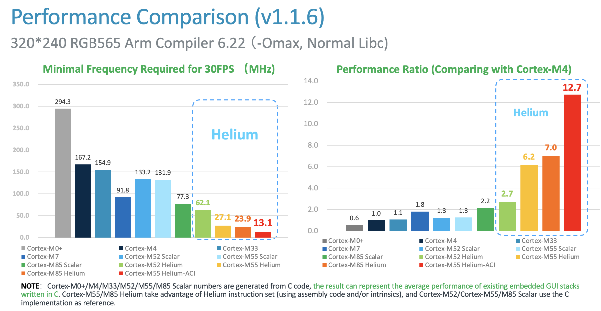

|
Arm-2D
2D Image Processing Library for Cortex-M Processors
|


|
|
Arm-2D
2D Image Processing Library for Cortex-M Processors
|
|

Arm-2D is an open-source project for 2.5D image processing on Cortex processors.
Arm-2D consists of:

Position in Ecosystem:
Current Focus and Objectives:
arm_2dp_rgb565_copy_with_src_mask_only() rather than the generic one, i.e. arm_2dp_rgb565_copy_with_src_mask() which takes a mirroring mode as a parameter and keeps all low-level implementations of all possible mirroring modes.Potential users of Arm-2D may have different backgrounds and purposes. Whether you are an application engineer for developing drivers from a silicon vendor, a system engineer of a GUI stack, or an application developer based on the purpose of using Arm-2D, there are two ways to get started:
Getting Started as an Application Designer
In some resource-constrained systems, the Flash (ROM) and SRAM are limited (e.g. 64K Flash, 12K SRAM), or the memory space left for GUI applications is limited, so such systems cannot afford the cost of a decent GUI stack. Meanwhile, such a low-cost system usually won't have a complex graphical user interface, hence application developers can directly use the arm-2d APIs to draw the panels and scenes.
Getting Started as a GUI Stack Developer
Application engineers from silicon vendors often need to write drivers for proprietary hardware accelerators. System engineers from GUI software providers may wish to use the APIs provided by Arm-2D to accelerate low-level operations. Engineers focused on embedded video processing may try using the Arm-2D APIs to process the frame buffer just captured from the camera. People from the open-source community may find something interesting to contribute. All developers mentioned above are seen as professional users.
The Arm-2D library provides Low-Level 2D Image Processing Services mainly used in Deep Embedded Display system. The supported features include but not limited to:
Disp0_DrawBitmapNOTE:
As long as the size is smaller than 32767 * 32767.
Transform (i.e. rotation and scaling)
__ARM_2D_HAS_ANTI_ALIAS_TRANSFORM__ to 1 at compile-time.Filters
An Unified and User-Friendly Programmers' Model
Helper Services, Tools and Others
arm_2d_helper_is_time_outarm_2d_helper_time_liner_sliderarm_2d_helper_time_cos_sliderarm_2d_helper_time_half_cos_sliderarm_2d_align_centre, arm_2d_align_bottom_right etc.arm_2d_dock_top,arm_2d_dock_right, arm_2d_dock_vertical, __item_line_dock_horizontal etc.__item_line_horizontal and __item_line_vertical__item_horizontal and __item_verticalarm_2d_layout() macro: TOP-DOWN, BOTTOM-UP, RIGHT-TO-LEFT etc.img2c.py for generating arm-2d resources from user-specified imagesttf2c.py for generating user-customized A1, A2, A4 and A8 fonts from an user-specified TrueType Fontjinja2c.py for code generation.Ready and Welcome 3rd party adoption
With the increasing introduction of smart IoT edge devices into our daily lives, users accustomed to smartphone-like graphical user interfaces (GUIs) now expect a similar modernized experience, even when using microcontroller-based products. This trend has been long recognized and understood by Arm's ecosystem partners.
Consequently, many silicon vendors have integrated dedicated hardware accelerators into their microcontroller products to facilitate 2D image processing. At the same time, GUI service providers have updated their product lines to cater to microcontroller-based GUI applications. Many open-source embedded GUI stacks, such as LVGL, are gaining popularity on GitHub.
In reality, using GUIs with microcontrollers is not a new concept. However, with the recent rise of IoT and AI, the limitations of simple and monotonous GUIs have become more apparent and less tolerable. Pursuing a user experience comparable to a smartphone has become a fundamental requirement for many products.
Interestingly, seemingly complex GUIs are often created using simple techniques like 2D image copying and tiling. Even translucent effects are achievable on microcontrollers running at tens or hundreds of MHz.
Technologies for 2D graphics have been mature since the era of 8-bit gaming consoles. If an 8-bit 6502 processor could produce impressive graphics effects, there is no reason why the most advanced Cortex-M processors today cannot achieve even more.
As shown in Figure 1-2, Linux based systems have a complete ecosystem that provides GPU drivers and GUI software services. In contrast, resource-constrained embedded systems do not have such luxury. To enhance the MCU ecosystem, Arm-2D is introduced.
Figure 1-2 Ecosystem Comparison between Rich Embedded and Constraint Embedded System in GUI

When we look at the traditionally embedded GUI architecture(as shown in Figure 1-3 ), there are four layers: 1) the application and designer layer, 2) the GUI software service layer, 3) the rendering layer, and 3) the hardware driver layer.
Arm-2D focuses on accelerating the low-level 2D image processing, and will not touch upper layers of the GUI software stacks, hence avoiding competing with GUI service providers in the same ecosystem. In fact, because Arm has proposed an abstraction layer for the low-level 2D image processing, a whole ecological level of cooperation can be quickly established between chip manufacturers that provide hardware accelerators and software providers that provide GUI services. Everyone can concentrate on enlarging their own values. For example, by adding arm-2d adaptor drivers for their proprietary 2D accelerators, silicon vendors can achieve a wide range of support from GUI providers who build/port their GUI stack upon Arm-2D APIs.
Figure 1-3 The Hierarchy of a Typical Embedded GUI System.

The library is targeting ALL Cortex-M processors with/without various hardware 2D image accelerators:
The library is designed with ACI (Arm Custom Instructions) in mind. Accelerations implemented with user-defined instructions can be integrated into the library easily without modifying the existing Arm-2D library or upper-layer software.
The library is designed with 2D image accelerators in mind and follows the feature-agnostic principle. Accelerators can be supported easily without modifying the existing Arm-2D library or upper-layer software.
The library is designed with resource constraints in mind. For Cortex-M processors with 8K~32K SRAM that cannot afford a complete framebuffer, Arm-2D introduces a feature called Generic Partial Framebuffer, enabling those existing MCUs to run GUI applications in a decent frame rate.
| Projects | Description | Folder | Note |
|---|---|---|---|
| [template][bare-metal] | It is a project template for the bare-metal environment. | examples/[template][bare-metal] | |
| [template][cmsis-rtos2] | It is a project template for the RTOS environment, which uses CMSIS-RTOS2 as an example to show how Arm-2D can work with an RTOS. | examples/[template][cmsis-rtos2] | |
| [template][pc][vscode] | It is a project template for PC (i.e. MacOS, Windows and Linux) using VS Code + SDL2 | examples/[template][pc][vscode] | |
| [template][csolution] | It is a csolution project template. | examples/[template][csolution] |
There is no public 2D image processing benchmark available for microcontrollers. To facilitate the library development and optimization, we overcome this problem with the following methods:
Figure 1-4 A snapshot of the generic benchmark running in Simulation

Figure 1-5 Performance Comparison among some Cortex-M processors

| Folder and File | Type | Description |
|---|---|---|
| Library | Folder | This folder contains the library's source files and header files. |
| Helper | Folder | This folder contains the source files and header files of helper functions/services. |
| Acceleration | Folder | This folder contains hardware specific accelerations, e.g. Helium-ACI example in FVP |
| documentation | Folder | This folder contains all the documents. |
| examples | Folder | This folder contains all the examples, controls and templates, etc. |
| README | .md | The README.md you are currently reading. |
| LICENSE | License | The Apache 2.0 License |
| tools | Folder | This folder contains useful utilities for using the library. For example, img2c.py is a Python script that converts specified pictures into the arm2-d tile data structures. |
| Name | Description | Location |
|---|---|---|
| API Manual | An API manual generated by Doxygen | *  : Documentation for latest official release : Documentation for latest official release * Documentation for latest development release |
| README.md | It is the document that you are reading. It provides basic information and guidance for the arm-2d library. | (root) |
| getting_started_as_an_application_designer.md | A guidance for GUI application designers. | documentation |
| getting_started_as_a_professional_user | A guidance for professional users. | documentation |
| how_to_deploy_the_arm_2d_library.md | A step by step guide that helps you to deploy the library to your existing or new projects. | documentation |
| introduction.md | A relatively detailed introduction for the library, including basic concepts, programmers' mode etc. | documentation |
| how_to_use_layout_assistant.md | A detailed document introduce the layout assistant helper service. | documentation |
| how_to_use_tile_operations.md | A detailed document elaborates the APIs dedicated to basic tile operations in the arm-2d library. | documentation |
| how_to_accelerate_arm_2d.md | A detailed document elaborates the methods available for accelerating Arm-2D library. | documentation |
| how_to_use_alpha_blending_operations.md | A detailed document elaborates the APIs dedicated to alpha-blending services provided by the arm-2d library. | documentation |
| how_to_use_conversion_operations.md | A detailed document elaborates the APIs dedicated to colour space conversion services provided by the arm-2d library. | documentation |
| how_to_use_drawing_operations.md | A detailed document elaborates the APIs that provide basic point-drawing and colour-filling services in the arm-2d library. | documentation |
| how_to_contribute | A guidance for contribution. | documentation |
Arm-2D aims to bridge the gap between low-cost, resource-constrained devices and high-performance, feature-rich embedded IoT edge devices by providing a unified and user-friendly programming model. Our goal is to facilitate the seamless and easy migration of GUI applications across Cortex-M, Cortex-R, and Cortex-A platforms. We hope that Arm-2D will inspire more initiatives and engineering practices in this field.
Your thoughts and feedback are invaluable to us. If you can spend some time trying out the library, please feel free to share your insights. It would be helpful to cover the following perspectives:
Thank you for your time.
Arm-2D Development Team.
9 Sept 2024